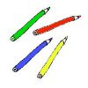
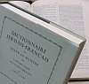
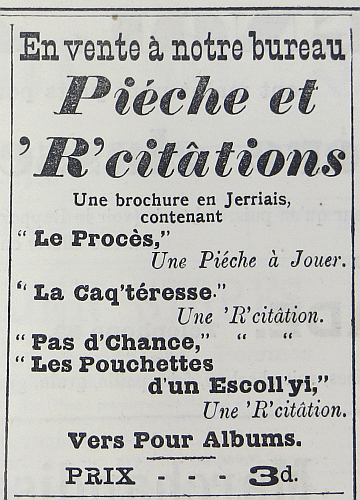
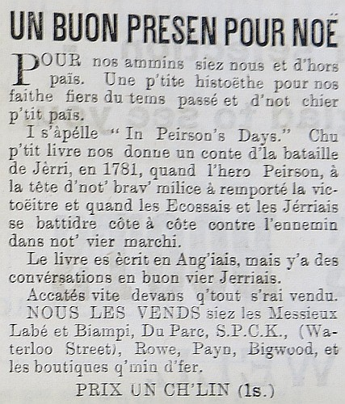
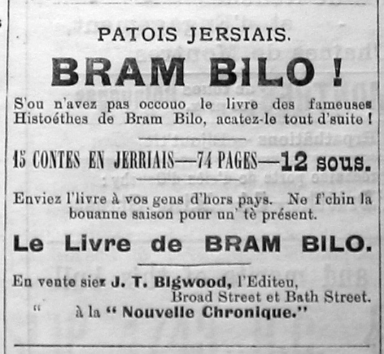
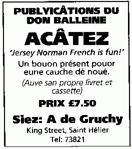

|  |  |
|
Jèrriais |
Angliais |
|
êcrithe |
to write |
|
l'êcrithie |
writing |
|
l'êcrituthe |
handwriting |
|
par êcrit |
in writing |
|
liéthe |
to read |
|
un lectuthyi |
a reader |
|
un liêseux |
a reader |
|
la lectuthe à livre ouvèrt |
reading at sight |
|
liéthe à livre ouvèrt |
read at sight |
|
liéthe en haut |
read aloud |
|
eune arrînmée |
a nursery rhyme |
|
eune colonne |
a column |
|
un conte |
a tale |
|
eune histouaithe |
a story, history |
|
eune lettre |
a letter |
|
appouaintchi un crèyon |
to sharpen a pencil |
|
eune machinne à êcrithe |
a typewriter |
|
eune page |
a page |
|
eune pathole |
a word |
|
eune pièche |
a piece, a play |
|
eune plieunme |
a pen |
|
fielleter |
to turn pages of a book |
|
iliêsibl'ye |
illegible |
|
împrînmer |
to print |
|
la bibliothèque |
the library |
|
la Bibl'ye |
the Bible |
|
la craie |
chalk |
|
la gâzette |
the newspaper |
|
la grammaithe |
grammar |
|
la lectuthe |
reading, lecture |
|
la papet'tie |
stationery |
|
la sîngnatuthe |
signature |
|
l'almonnas |
the almanac |
|
lé papi |
the paper |
|
lé vocabulaithe |
vocabulary |
|
l'encre |
ink |
|
l'encriyi |
the inkwell |
|
la littéthatuthe |
literature |
|
littéthaithe |
literary |
|
eune poésie |
a poem |
|
la poésie |
poetry |
|
un vèrset |
a verse |
|
lé livre |
the book |
|
lé magâsîn |
the magazine |
|
lé thiâtre |
theatre |
|
eune articl'ye |
an article |
|
un auteu |
a writer |
|
l's Êcrituthes |
Scripture |
|
sinner |
to sign |
|
un crèyon |
a pencil |
|
un dictionnaithe |
a dictionary |
|
un diton |
a saying |
|
un dotchument |
a document |
|
un fieillet |
a pamphlet |
|
un glossaithe |
a glossary |
|
un journal |
a diary |
|
un mot |
a word |
|
un nom-d'plieunme |
a pen name |
|
un paids à papi |
paperweight |
|
un rapport |
a report |
|
un relle |
a ruler |
|
un touchet |
a bookmark |
|
|
|
|
eune pouque à plieunmes |
pencil case |
|
rouogeplieunmer |
to correct, to mark up corrections |
|
la rouogeplieunm'thie |
correction, editing |
|
l'abc |
the alphabet |
|
eune plieunme à balle |
a ballpoint pen, a biro |
|
les feûtres |
felttip pens |
|
les crèyons d'chithe |
wax crayons |
|
griffouoilli |
to scribble, to write badly |
|
du griffouoillîn |
scribble, bad handwriting |
|
d'la griffouôl'lie |
scribble, bad handwriting |
|
du griffouoillage |
scribble, bad handwriting |
|
d's n et d's u |
scribble, bad handwriting |
|  |  |  |  |
Viyiz étout:
{kind=link}
{kind=link}
{kind=link}
{kind=link}